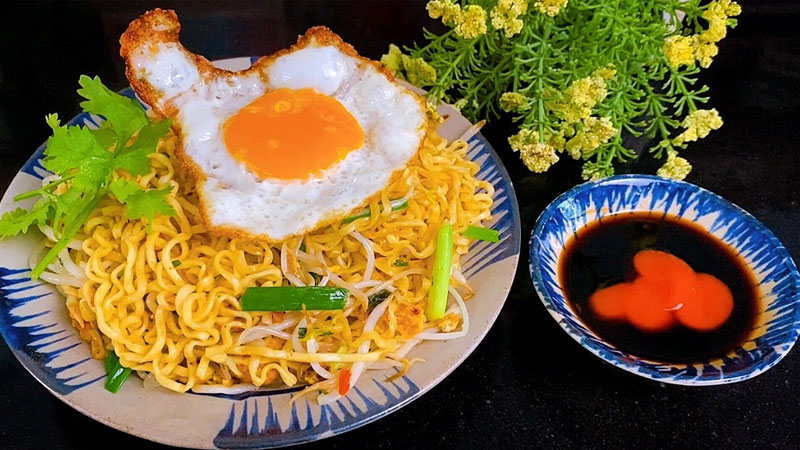

Mì Xào

Description
"Stir-fried noodles with eggs are a familiar dish, easy to prepare with simple ingredients available in the kitchen but still ensure enough nutrition, very suitable for busy mornings."
Ingredients
- 2 gói mì ăn liền
- 2 quả trứng gà
- Một ít hành lá
- 3-4 củ hành tím
- Gia vị: muối, tiêu, đường, dầu ăn, nước mắm, hạt nêm
- Cải ngọt hoặc bất kỳ loại rau nào bạn thích
Steps
- Nấu 1 nồi nước sôi rồi cho mì vào trụng sơ, không cần phải trụng lâu mà chỉ cần trụng cho mì vừa chín tới rồi vớt mì ra.
- Bắc chảo lên bếp, cho 1 chút dầu ăn vào chiên ốp la trứng. Trứng chín gắp ra đĩa.
- Mì xào trứng tuy đơn giản nhưng là món ăn sáng phù hợp. Mì vừa chín, trứng béo và rau thanh mát ăn rất ngon.